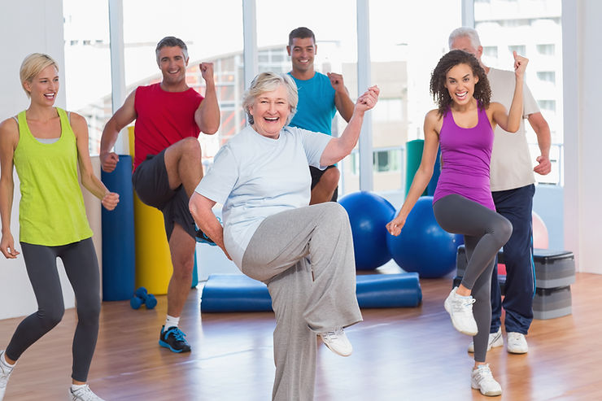
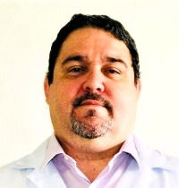

6 de abril é o dia mundial da atividade física e, como não poderia ser diferente, resolvemos pesquisar assuntos relacionados ao tema e, de imediato, veio a pergunta: por que o sedentarismo atinge índices altos, quando atividade física contribui para saúde do corpo e da mente? Será que este hábito não é prazeroso?
Os psicólogos do esporte Thabata Telles, estudiosa da fenomenologia, e Murilo Calafange, especialista em neurociência e mestrando em neuropsiquiatria e ciências do comportamento, falaram (muito, rsss) sobre o tema
Há prazer na atividade física? Se sim, depois de quanto tempo este efeito é percebido?
As perguntas foram apenas estas, mas o debate rendeu um conteúdo bastante interessante.
Thabata – Acho muito perigoso falar de prazer na atividade física. Porque pode gerar uma expectativa de que é possível sentir prazer logo de cara. Principalmente pelo fato de que, um exercício novo pode ser um evento estressor e talvez demore para existir uma relação prazerosa.
Murilo – É bastante complexa esta questão. Prazer não está, necessariamente, ligado à prática da atividade física. Prazer é a consequência.
No meu viés, neuropsicofisiologia, dentro das neurociências, atividade física é tratamento, é remédio. Para todos os meus pacientes, independente dos quadros de ansiedade, depressão… eu prescrevo atividade física. Porque ela vai trabalhar a parte metabólica do organismo, que ajuda no funcionamento do cérebro.
Antes de uma resposta de prazer, tem que ter estímulo. Não é só uma questão química. O cérebro é responsivo e com o estímulo ele responde.
Se a primeira motivação for saúde, no final, vendo os ganhos, o desejo de continuar pode prevalecer. É o que chamamos de recompensa. Diferente de avaliar se é bom ou ruim. O que, neste caso, é a ação de outra área do cérebro, o córtex cingulado, que ajuda no julgamento.
O prazer, por si só, é a endorfina, que só é ativada no corpo após atividade física. Ela traz uma sensação de bem-estar e pode ser caracterizado como prazer. Mas ainda ficamos na questão: fazer ou não atividade física, porque será prazerosa ou não? A atividade física tem um fim, uma função: proporcionar saúde.
Thabata – Murilo, o que você está dizendo complementa meu pensamento. Quero destacar dois pontos: o primeiro sob a lógica de uma fenomenologia mais cognitiva, especialmente na questão da percepção e ação, que é o que estudo mais. Penso no prazer e na dor como parte de um mesmo processo. São basicamente pólos opostos. A percepção da dor faz com que eu mude meu curso de ação, enquanto a percepção do prazer, incentiva a manter determinada ação. Se eu não tenho uma percepção de prazer em algo, eu volto minha atenção para outra coisa, como por exemplo: posso desligar a TV porque não está transmitindo algo que me agrade.
Do ponto de vista da percepção e da ação, o prazer é muito importante para manter a continuidade deste curso de ação. Nesse sentido, o outro ponto é que temos que desmistificar um pouco essa ideia, da atividade física e da sensação de prazer, já que é necessário um tempo em determinada ação para que o prazer possa ser sentido e percebido. Ou seja, não é algo imediato e nem pode ser tomado como certo que a pessoa vai se movimentar e logo sentir prazer. E sobre isto eu pergunto ao Murilo: No sentido temporal mesmo, quando os neurotransmissores começam a agir?
Murilo – Respondendo como neurocientista, não fazer atividade física significa deixar de produzir alguns hormônios e neurotransmissores.
Primeiramente, quando fazemos atividade física liberamos um hormônio chamado GH, o hormônio do crescimento. Por isso é importante que a criança brinque, corra, não é só pela questão da psicomotricidade, mas também para o desenvolvimento corporal dela. E este é o motivo de eu ser um dos grandes defensores da educação física na escola. Bem orientada, com um profissional competente, respeitando o corpo infantil. Isso ajuda tanto o desenvolvimento físico e a estrutura músculo-esquelética dela, como também das questões cognitivas, como o funcionamento e desenvolvimento do cérebro com a questão da psicomotricidade. Tem o papel fundamental no nosso desenvolvimento desde a mais tenra idade até a vida adulta.
Outra questão, a atividade física você libera catecolaminas, os hormônios conhecidos como adrenalina, noradrenalina, dopamina… e pra que serve isso?
A adrenalina ajuda muito na parte metabólica, na liberação de energia que faz você reagir e sair fazer alguma coisa. Para um nível de adrenalina ótimo, é necessário alguma atividade física regular.
Com a atividade física também produzimos outro precursor da adrenalina, a noradrenalina.
Um parênteses: todas as catecolaminas ajudam muito no foco atencional, na questão da memória e do aprendizado. Só que a noradrenalina tem uma função fisiológica muito importante: além de dar energia e de fazer aquela quebra de glicogênio nos músculos ( o glicogênio é a nossa gasolina, a célula de glicose com mais oxigênio, que faz funcionar o nosso corpo, que dá energia) libera células adiposas para serem metabolizadas e transformadas também em energia, ajudando na queima e no controle da gordura corporal.
A terceira e a mais conhecida, a dopamina, também é produzida na atividade física e atua em diversas regiões do cérebro, ajudando muitas funções. Ela influencia nas emoções, no aprendizado, no humor, na atenção e aí tem a questão do prazer. A dopamina é responsável pela ativação de uma região do nosso cérebro chamada núcleo accumbens, que é o nosso famoso sistema de recompensa. Por exemplo: quando você está com fome e come, é aquela sensação de “ai que delicia”.
É a dopamina que nos impulsiona todos os dias. Níveis baixos de dopamina leva a não reação e está sempre ligada às questões de depressão. Serotonina e dopamina mantém nossa vida.
Encaixar uma atividade física no dia a dia, acaba com a zona de conforto e com o famoso sedentarismo, causa de diversas patologias fisiológicas e neuro-degenerativas e das questões emocionais. Atua como prevenção.
E aí, entra a irisina, uma descoberta nem tão antiga nem tão nova, hormônio produzido dentro dos músculos. Seu papel é reforçar o nosso sistema imunológico. Só produzimos a irisina quando fazemos atividade física com média e alta intensidade, quando colocamos o músculo para mexer. A atividade física atua na prevenção das doenças, e a irisina também.
Thabata – Murilo, você fala que algumas atividades precisam ser de média-alta intensidade. Em que momento essa ação acontece? Sei que varia de pessoa para pessoa, e neste ponto, a atividade física, não necessariamente, vai gerar prazer.
Quando falo desse mecanismo gerado pelo engajamento na atividade física, e nas expectativas de algo imediato, estamos falando de cognição. De ter estratégia no campo da cognição, para conseguir se engajar.
Murilo – É isso! O que pode vir a ser prazeroso, vem depois. Antes você precisa, através da cognição, usar o pensamento, o raciocínio lógico e dizer que fazer atividade física vai melhorar minha saúde e é a primeira mola motriz e faz com que eu vá em frente.
Thabata – Quando você tem estresse no corpo, tem uma elevação de cortisol. E isso não é bom. Mas na atividade física é um estresse visto como positivo. E há uma inibição do cortisol. Isto é interessante, porque às vezes você pode ter, num mesmo estímulo, um evento estressor negativo para uma pessoa e positivo para outra.
Murilo – Todo mundo precisa fazer atividade física. Mesmo que o mínimo, mas sempre dentro da sua realidade, da sua adaptação corporal. Não significa colocar uma pessoa no wod do CrossFit. Tem que ir devagar. Adaptar o corpo e o prazer vem disso. Se fizer uma atividade mal assessorada, com um profissional ruim, as primeiras experiências serão péssimas, com muita dor e pode se machucar. Mas com um bom profissional de educação física, estudioso, competente, que respeite o organismo, o corpo, e os níveis de adaptação ao exercício, começar a fazer a atividade deixa de ser um problema.
Thabata – Por isso, minha questão é de que a atividade física não é, necessariamente, prazerosa, porque vai depender do tipo de atividade física, da tua história de vida, e, fundamentalmente, da relação com o corpo. Murilo, você falou sobre a importância dos profissionais. Temos que entender como funciona essa questão do prazer na atividade e trazer a discussão: como, de fato, isso pode me dar prazer? Mas sempre partindo do pressuposto de que eu vou ter um engajamento minimamente positivo para conseguir começar e continuar.

Graduado em Psicologia pela Faculdade Frassinetti do Recife FAFIRE(2003); Especialista em Psicologia da Educação (2005) também pela FAFIRE; Especialista em Psicologia do Esporte pela prova de títulos do Conselho Federal de Psicologia (2018); Especialista em Neurociência Multiprofissional pelo IDE/UFPE (2020); Mestrando pela POSNEURO – Neuropsiquiatria e Ciências do Comportamento – Universidade Federal de Pernambuco – UFPE (2021) Tem experiência nas áreas de Psicologia Escolar Educacional, Psicologia do Esporte, Psicologia Social, Educação Popular, Movimentos Sociais e Políticas Públicas. Exerceu a função de coordenador psicopedagógico do programa Casa Pe. Melotto(2003/2010) gerenciado pela instituição italiana Pia Sociedade de Pe. Nicola Mazza. Como coordenador, supervisionou e orientou estagiários de licenciatura em ambientes não-formais de educação e de psicologia social e escolar; Nas ações realizadas nas escolas públicas parceiras do programa, capacitou e assessorou o corpo docente com as questões de rendimento escolar e sobre o desenvolvimento da criança e do adolescente. Prestou consultoria para a Rede Pública de Ensino com a temática do Bullying e Cyberbullying e em parceria com a UFPE, Centro Paulo Freire e a Faculdade de Ciências Humanas de Olinda – FACHO coordenou o curso de extensão universitária: ?o pensamento de Paulo Freire e a prática educativa com adolescentes e jovens em vulnerabilidade social? em 2009 e 2010. Áreas de pesquisas: vulnerabilidade social e resiliência; violência no ambiente escolar e cultura de paz; sexualidade, juventude e prevenção; bullying e as ferramentas tecnológicas; subjetividade e o uso do álcool e outras drogas; Psicologia do Esporte e Neurociência do Esporte e a qualidade de vida de atletas. Em 2011 até 2012 exerceu a função de gerente de uma casa de acolhida temporária do IASC-Prefeitura do Recife; Trabalhou como psicólogo esportivo dos times de base do Sport Club do Recife de 2011 a 2019 e atuou como conselheiro-tesoureiro e coordenador do grupo de Psicologia do Esporte do Conselho Regional de Psicologia – 2ª Região gestão 2013/2016.
Pesquisadora pós-doc (FAPESP) em Educação Física e Esporte, atuando em colaboração entre Brasil (EEFERP/USP), França (I3SP/Université de Paris) e Portugal (CIDI-CIIDEBE/IESF). Doutora em Ciências: Psicologia (FFCLRP-USP/FAPESP). Pesquisadora em Filosofia (Fenomenologia) nos Arquivos Husserl – Paris (ENS-CNRS/FAPESP) de 2016 a 2018. Possui graduação em Psicologia (UNIFOR/CNPq) e Mestrado em Psicologia (UNIFOR/FUNCAP). Psicóloga reconhecida pelo Conselho Federal de Psicologia (CFP-Brasil), pela Ordem dos Psicólogos Portugueses (OPP-Portugal) e pelo Ministère de lEnseignement Supérieur et de la Recherche (França). É especialista em Psicologia do Esporte pelo CFP, membro do GT de Psicologia do Esporte da ANPEPP e atual presidente da ABRAPESP (Associação Brasileira de Psicologia do Esporte) – gestão 2020-2021. Atua e pesquisa de modo interdisciplinar acerca do movimento humano com ênfase em fenomenologia; psicologia do esporte & da atividade física; embodiment; percepção-ação; artes marciais & esportes de combate.